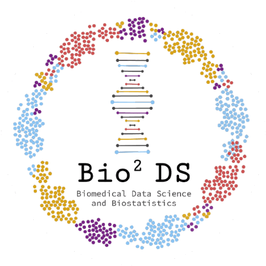
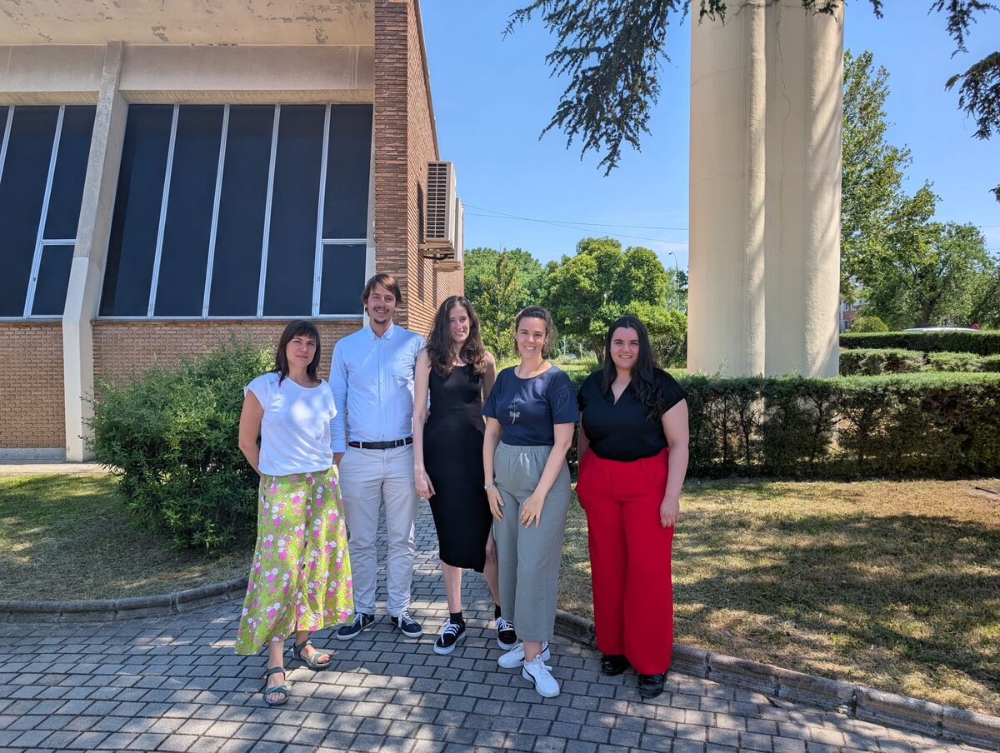
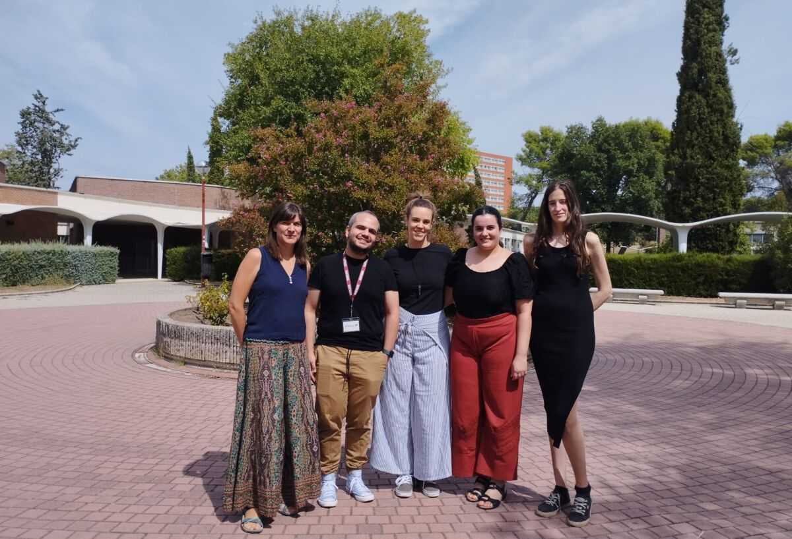

> machine learning
Transformamos datos biomédicos complejos —ómicos, clínicos y de salud poblacional— en conocimiento útil para la práctica clínica.

Somos el grupo de investigación BIO²DS (Biomedical Data Science & Biostatistics), con sede en la Facultad de Estudios Estadísticos de la Universidad Complutense de Madrid.
Nuestro trabajo se centra en el análisis de datos de medicina, salud y sus determinantes sociales, ómica y biología, bajo el paraguas de la ciencia de datos, el Machine Learning y la bioestadística. El grupo está abierto a colaboraciones con investigadores/as/es, personal predoctoral, postdoctoral y estudiantes.
Nuevos métodos estadísticos y de ML para datos de alta dimensión.
Resultados aplicables a la práctica clínica y la salud pública.
Código abierto, reproducible y documentado.


Líneas de investigación, datos ómicos, modelos predictivos y nuestro código abierto.
ver líneas → 02Investigadoras principales, personal predoctoral y personas que han pasado por el grupo.
ver equipo → 03Artículos destacados, tesis doctorales y Trabajos Fin de Máster.
ver publicaciones → 04Hospitales, centros de investigación y universidades con los que trabajamos.
ver red →Estamos abiertas/os a colaboraciones con grupos clínicos, investigadoras/es y estudiantes de máster o doctorado. Si tienes dudas sobre nuestro código, encuentras un error o quieres proponernos algo, abre un issue en cualquiera de nuestros repositorios.